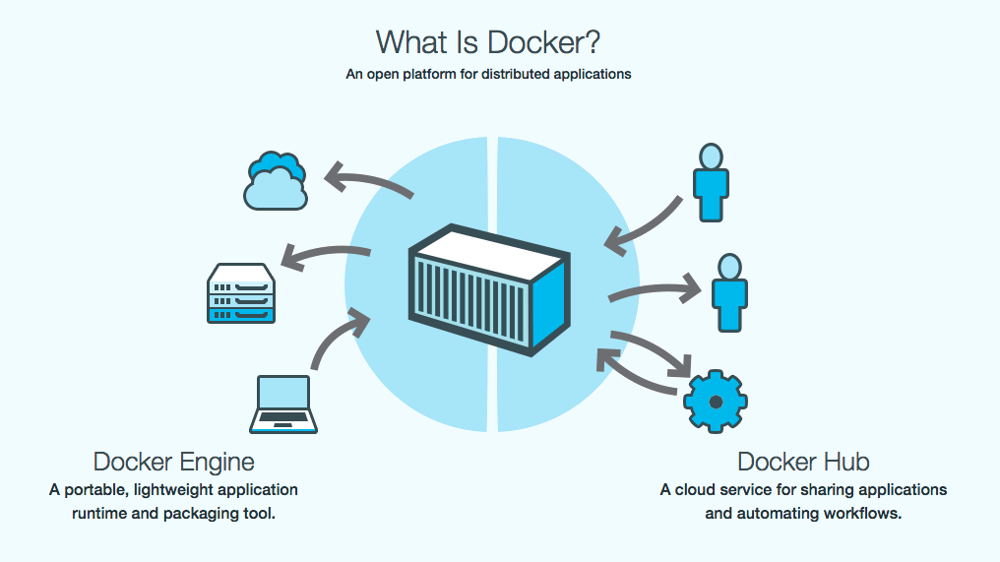

Docker — это платформа контейнеризации с открытым исходным кодом, с помощью которой можно автоматизировать создание приложений, их доставку и управление. Платформа позволяет быстрее тестировать и выкладывать приложения, запускать на одной машине требуемое количество контейнеров.
